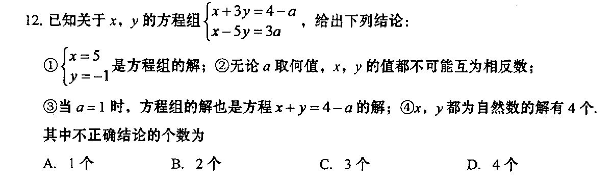

出现结局: 1
①x=5, y=-1 是方程服的解；②无论a取何值, x，y的值都不可能互为相反数;
③当a=1时，方程组的解也是方程x+y=4-a的解; ④x，y都为自然数的解有4个.
其中不正确结论的个数为
A. 1个 B. 2个 C. 3个 D. 4个
①x=5, y=-1 是方程服的解；②无论a取何值, x，y的值都不可能互为相反数;
③当a=1时，方程组的解也是方程x+y=4-a的解; ④x，y都为自然数的解有4个.
其中不正确结论的个数为
A. 1个 B. 2个 C. 3个 D. 4个